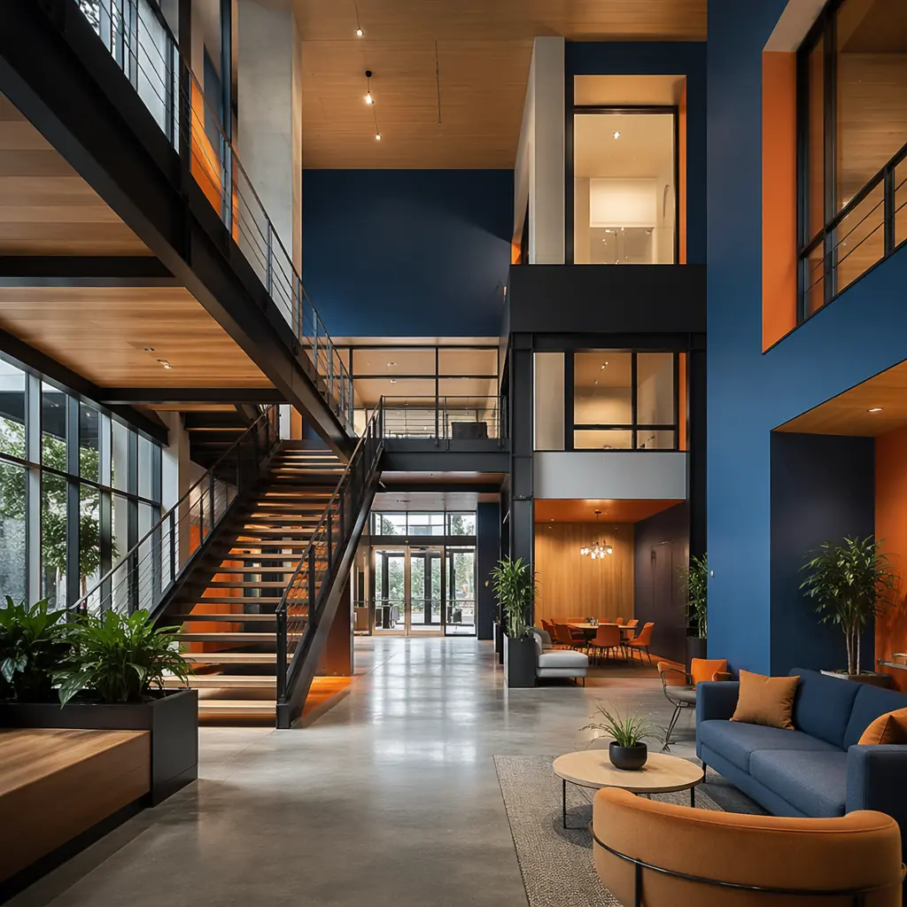
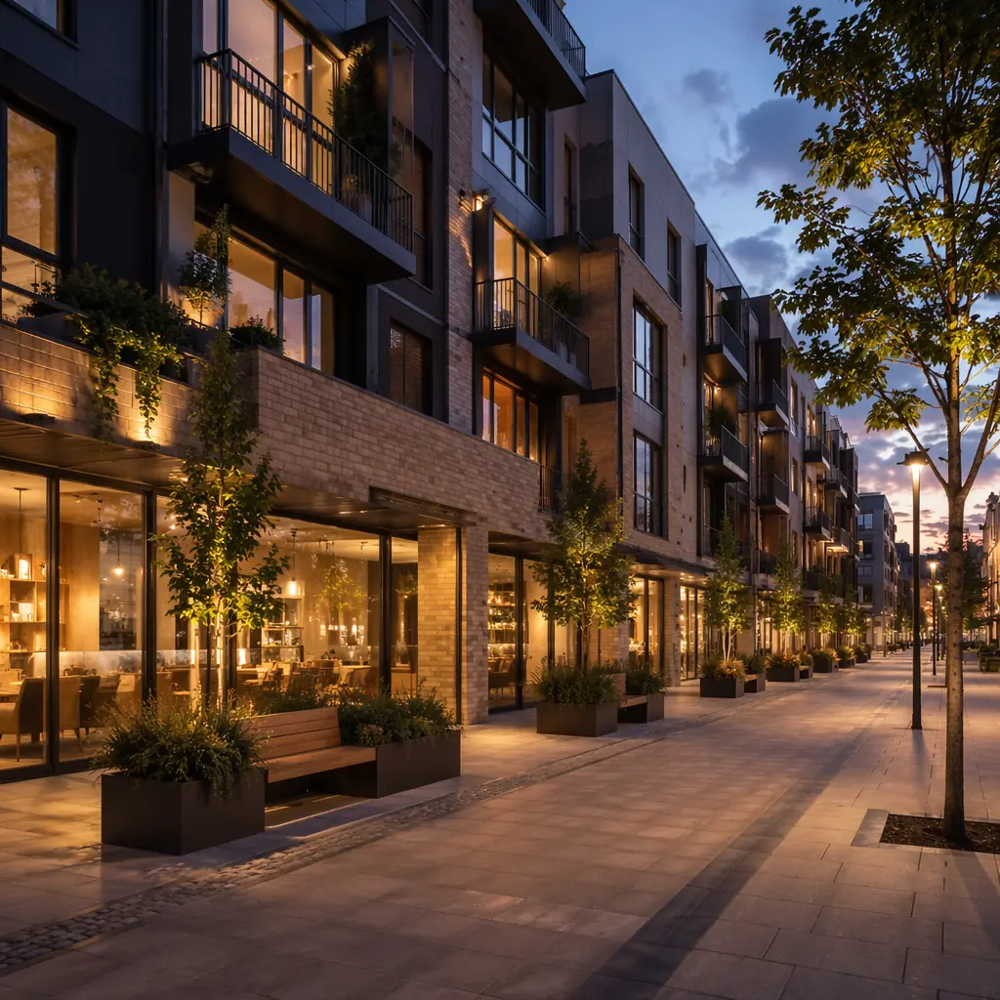
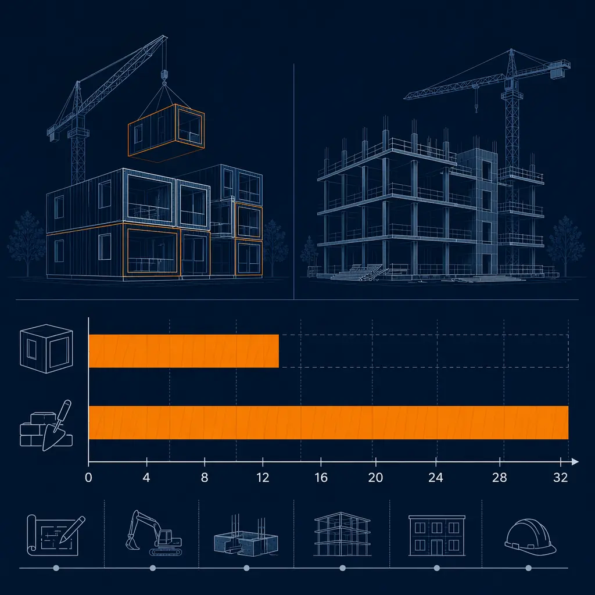

Mixed-use developments — projects that blend retail, residential, and office spaces — have become the preferred model for urban investors seeking higher yields, reduced vacancy risk, and stronger community value. Yet traditional construction methods fracture these projects with complex phasing, long timelines, and overlapping trades that amplify budget risk.
Modular construction changes the equation. By manufacturing building components off-site while site preparation proceeds in parallel, modular mixed-use projects deliver faster timelines, phased handover that accelerates rental income, and factory-controlled quality that eliminates the coordination risk between different building uses. Here is how the data stacks up for commercial developers evaluating modular for their next mixed-use scheme.

Why Mixed-Use Developers Are Turning to Modular
The economics of mixed-use are compelling on paper: a well-designed scheme can achieve net operating income premiums of 15–25% compared to single-use assets. But the execution risk is high. Coordinating retail fit-out standards, residential code requirements, and office floor-load specifications within a single construction program creates complexity that conventional methods struggle to manage.
Modular construction addresses the core challenge: different building uses have different structural and MEP requirements, but modular manufacturing handles variation through programmed production lines rather than ad-hoc site work. Retail spaces need column-free spans for shop floors; residential units need sound-isolated party walls; office floors need raised access floors and high floor-to-ceiling heights. A modular approach designs each use type as a distinct module configuration, manufactured on parallel production lines and assembled on-site in a coordinated sequence.
Over 500 modular projects delivered across 18 countries, MODURA has refined the engineering and logistics for exactly this kind of mixed-use integration. Our factory approach means that a ground-floor retail module with 12-metre clear spans, a mid-rise office module with integrated MEP risers, and an upper-level residential module with fully finished interiors can be produced simultaneously and assembled on-site within weeks.
Phased Handover: The Financial Game-Changer
The single biggest financial advantage of modular mixed-use is phased handover. In a conventional mixed-use project, the entire building must reach practical completion before any tenant can take possession. With modular construction, different zones of the building can be completed and handed over at different times — retail tenants fit out their spaces while residential floors are still being stacked above them.
In a recent MODURA mixed-use project in Belgium, the ground-floor retail units were ready for tenant fit-out just 12 weeks after the first module delivery. The residential floors above were completed in the following 8 weeks, and the office floors above that were finished 4 weeks later. The developer began collecting retail rent 5 months before residential handover — generating an additional $320K in revenue that would have been deferred under a conventional build sequence.
This phased approach also reduces the developer's working capital requirements. Construction financing typically covers the full project duration; shorter construction periods for each phase mean lower average loan balances and earlier repayment. For a mid-size mixed-use project in the $25–40M range, the financing cost savings alone can reach $600K–$900K.

Module by Module: How Mixed-Use Modular Works
A typical modular mixed-use development uses a hybrid structural system. The ground-floor retail zone is built with structural steel or post-tensioned concrete to achieve the column-free spans that retail tenants require — typically 10–14 metres. The residential and office floors above use volumetric modular units that carry their own structural loads and stack within a steel or concrete frame.
Each residential module arrives on-site with everything installed: interior finishes, MEP systems, windows, bathrooms with tiling and fixtures, kitchen cabinetry, and even LED lighting. On-site work focuses on stacking modules, connecting inter-module MEP risers, installing the building envelope, and completing external landscaping and public realm works. The factory-built precision eliminates the coordination risk between different trades — a hotel module and an apartment module manufactured in the same factory follow the same quality standards, reducing punch-list items at handover by 70–80% compared to conventional builds.
Design Flexibility Without Sacrificing Speed
One common concern is that modular construction limits architectural expression in mixed-use projects where retail and public spaces need a distinct identity. Our approach disproves that. Modules can be clad in a variety of materials — brick slips, timber, metal panels, glass curtain wall — and floor plans can be customised to differentiate residential units from office layouts. The modular grid accommodates column-free spans up to 12 metres in retail zones using transfer structures, while residential modules maintain standardised layouts that reduce unit cost. The result is a building that reads as bespoke but benefits from the repeatable manufacturing efficiencies that make modular economical.
Architects and design teams appreciate being able to focus on the public realm, facade expression, and streetscape integration without getting bogged down in repetitive module detailing. The factory handles the repeatable parts; the design team concentrates on what makes each project unique.
Data Points: Faster Delivery, Better Returns
The financial case for modular mixed-use rests on measurable outcomes. Here are three specific data points from MODURA's mixed-use portfolio that quantify the advantage for developers and investors:
- Timeline compression: A 20,000 m² mixed-use project with retail, office, and residential components completed in 16 months from foundation to handover — including external landscaping and public realm works. A conventional equivalent with similar program was estimated at 36 months. The 55% timeline reduction saved $1.2M in construction financing costs alone.
- Cost certainty: Final project cost came in 8% below the approved budget, compared to industry averages of 10–15% overruns for conventional mixed-use. The factory production model eliminates change orders — the largest source of cost overrun in traditional construction.
- Pre-leasing advantage: Retail units were 100% pre-leased six months before building handover. The schedule certainty of modular delivery allowed the developer to sign leases with firm move-in dates 10 months ahead of practical completion, something impossible with conventional construction timelines.

Sustainability That Meets Mixed-Use Economics
Sustainability is no longer optional for commercial developments — it is a prerequisite for planning approval and tenant demand. Modular construction delivers sustainability outcomes that conventional methods cannot match, particularly for mixed-use projects where different occupancy types have different energy profiles.
Factory-controlled production generates up to 90% less site waste than traditional construction. For a 20,000 m² mixed-use project, that means approximately 1,200 tonnes of construction waste avoided — fewer skip lorries, less neighbourhood disruption, and lower embodied carbon. Our modules are precision-engineered for airtightness, achieving 0.15 ACH50, which exceeds Passive House requirements and reduces operational energy costs by 35–40% compared to code-built equivalents.
Each occupancy type benefits differently. Retail tenants see lower service charges from reduced HVAC loads. Office occupiers with net-zero targets inherit a building that supports their ESG commitments. Residential leaseholders get lower utility bills — a measurable selling point in competitive rental markets. A recent MODURA mixed-use project achieved an EPC rating of A across all three use types, demonstrating that modular quality is consistent regardless of the final occupancy.
Risk Mitigation: Fewer Variables, More Certainty
Mixed-use developments carry inherent risks: overlapping trades, unknown ground conditions, and complex phasing. Modular construction mitigates several of these systematically:
- Weather dependency eliminated: 80% of construction work happens in climate-controlled factories, removing weather delays that typically add 15–25% schedule buffer to conventional mixed-use projects
- Labour risk managed: Factory production is not subject to local labour shortages. Our four factories across three continents maintain consistent capacity regardless of local market conditions
- Quality consistency: Every module passes through the same quality gate system — 5 inspection checkpoints before leaving the factory. This eliminates the variation in workmanship quality that plagues large mixed-use sites with multiple subcontractors
- Phased delivery guarantee: The sequential module delivery schedule is contractually defined. Developers can plan tenant fit-out commencement with confidence, rather than waiting for overall project completion
These risk reductions translate to lower contingency requirements — typically 3–5% for modular versus 10–15% for conventional — freeing up capital for other investments or improving project feasibility for borderline schemes.
Real-World Example: 20,000 m² Urban Hub, Belgium
MODURA recently completed a landmark mixed-use development in Belgium: a 20,000 m² urban hub with 6,000 m² of ground-floor retail (supermarket, cafes, and specialty shops), 5,000 m² of Grade A office space, and 9,000 m² of residential (80 apartments across studio, one-bedroom, and two-bedroom layouts).
- Project type: 5-story podium + 4-story tower, hybrid steel frame + volumetric modules
- Conventional estimate: 36 months, €38.5M
- Modular actual: 16 months, €35.4M
- Total savings: 20 months (55% faster), €3.1M (8% below budget)
- Retail handover: 12 weeks after first module delivery
- Residential handover: 20 weeks after first module delivery
- Pre-leased at handover: 100% retail, 74% office, apartments sold out in 3 weeks
- Developer ROE: 25.3%

The developer's project director commented: "The ability to hand over retail first was the deciding factor. We signed leases with a supermarket and three cafes 10 months before residential completion. In a conventional build, that retail rent would have been deferred by nearly two years."
The Bottom Line for Mixed-Use Developers
Mixed-use projects are structurally complex, but the complexity is precisely what makes modular construction the right solution. When different building types occupy the same site, the coordination challenges multiply — different structural loads, different MEP configurations, different tenant expectations. Modular manufacturing resolves that complexity by standardising each use type into a repeatable production process, then orchestrating delivery to match the project's specific phasing requirements.
The financial outcomes speak for themselves: 55% faster delivery, 8% below-budget cost performance, and phased handover that generates rental income months or years earlier than conventional sequencing allows. For commercial developers and investors evaluating mixed-use opportunities, modular construction is not an alternative method — it is the method that makes mixed-use economics work in a market that demands faster returns and lower risk.
Contact our team for a preliminary feasibility assessment on your mixed-use project. We will provide a concept design, timeline comparison, and budget estimate within two weeks.